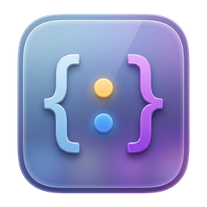

App desktop · macOS
Dado estruturado sob a lente
JSON, YAML, TOML, XML, CSV, logs e mais 10 formatos na mesma janela. Cole, abra ou edite: Loupe valida, aponta o erro na linha exata e mostra o documento inteiro em árvore navegável. Nativo, leve e 100% offline.
Gratuito · Sem cadastro · Nenhum dado sai da sua máquina

O problema
Colar payload em site aleatório não deveria ser rotina
Todo dia alguém joga um retorno de API com token, CPF ou dado de cliente em um validador online qualquer para descobrir onde está a vírgula errada.
A alternativa costuma ser abrir uma IDE inteira só para olhar um arquivo de 40 linhas, ou rodar jq de cabeça no terminal.
Loupe é o meio termo: abre em um segundo, mostra o documento inteiro e nunca manda nada para lugar nenhum.
Formatos
Abre o que chega até você
Dezesseis formatos entram pela mesma porta e saem na mesma árvore, com a mesma busca por JSONPath
Dados e API
Resposta de endpoint, log estruturado, token colado do navegador
Configuração
Manifesto, compose, pom, preferência de sistema e arquivo de ambiente
Tabela e métrica
Planilha exportada, log de serviço e scrape de métrica
Saída de console
O termo que você copiou do IEx, do shell ou do dump e não dá para ler
Arquivo de extensão desconhecida entra pelo faro de conteúdo: o Loupe olha o texto e escolhe o parser
Funcionalidades
Tudo que você faz com dado estruturado, em uma janela só
Árvore virtualizada
Documento renderizado em árvore ao lado do texto. Arquivo com dezenas de milhares de registros rola sem travar.
Erro na linha exata
Documento inválido pinta a linha do problema em vermelho e mostra a mensagem do parser na barra de status.
Busca com JSONPath
Filtre documentos grandes com expressões como $..id ou $.itens[?(@.valor > 10)]. Ajuda embutida no app.
16 formatos no mesmo app
De .json e .yml a CSV, XML, TOML e saída de console. Em aba nova, detecta o formato do que você colou.
Abas com autosave
Vários arquivos abertos ao mesmo tempo, ponto laranja nas abas com alteração pendente e gravação automática após a pausa na digitação.
Recarrega o que mudou em disco
Se outro processo reescreve o arquivo, a aba se atualiza sozinha. Edição sua em andamento nunca é sobrescrita.
Prettify sem perder nada
Um clique para indentar aquele JSON de uma linha só. Em YAML e TOML o botão trava quando reescrever descartaria comentário, âncora ou data.
Tema claro e escuro
Alterna no próprio app e a barra de título do sistema acompanha. A preferência fica salva entre sessões.
Offline de verdade
Todo o processamento acontece na sua máquina. Sem conta, sem telemetria, sem requisição de rede.
Realce de sintaxe
Editor CodeMirror com a gramática de cada formato e as mesmas cores da árvore: o mesmo valor tem a mesma cor dos dois lados.
Dobra sincronizada
Fechar um bloco no editor fecha o mesmo nó na árvore, e vice-versa. O botão de expandir e colapsar age nos dois painéis.
Colagem esperta
JWT colado vira header e payload decodificados, com as datas legíveis. Blob base64 que carrega JSON é decodificado na hora.
CSV vira lista de objetos
CSV e TSV abrem na árvore com as colunas como chaves e o separador detectado sozinho. JSONPath e exportar JSON funcionam igual.
Exportar como JSON
Com ⌘E o conteúdo já convertido vai para o disco: é a saída natural de YAML, TOML, CSV ou termo Elixir que precisa virar JSON.
Arraste e solte
Vários arquivos jogados na janela abrem uma aba cada. O Loupe também entra no "Abrir com" do sistema para os formatos que registra.
Painel dividido
Texto de um lado, estrutura do outro
Você edita à esquerda e vê o resultado à direita na mesma hora. O divisor arrasta entre 20% e 80% da janela, então dá para priorizar o texto ou a árvore conforme a tarefa, e a largura escolhida volta na próxima abertura.
- →Dobra compartilhada: fechou no editor, fechou na árvore
- →Contagem de caracteres e de propriedades na barra de status
- →Resultado do JSONPath substitui a árvore, com índice em cada match
- →Indicador de alteração não salva sempre visível
Atalhos
Feito para quem não solta o teclado
A referência de JSONPath fica no rail lateral, junto de abrir, exportar, prettify e expandir
Para quem
Quem usa o Loupe todo dia
Quem trabalha com API
Resposta de endpoint colada direto na janela, validada e explorada sem sair da máquina.
- →Payload com token nunca sobe para a web
- →JSONPath acha o campo em resposta gigante
Infra e DevOps
Manifesto de Kubernetes, pipeline de CI, docker-compose. YAML validado antes de virar incidente.
- →Indentação errada apontada na linha
- →Recarrega quando o arquivo muda em disco
Suporte e QA
Log estruturado e retorno de integração legíveis por quem não vive dentro do terminal.
- →Árvore em vez de parede de texto
- →Abre em segundos, sem instalar SDK
Download
Baixe e use hoje
Aplicativo nativo em Tauri. Menos de 10 MB, sem runtime extra para instalar.
Prefere ler o script antes? veja o que ele faz · ou baixe o .dmg
Windows
Em breve
Linux
Em breve
macOS 10.15 ou superior - ver todas as versões →
Pare de colar seu JSON na internet
Loupe é gratuito, roda offline e abre mais rápido do que a aba do navegador que você usava para isso.
Baixar Loupe →